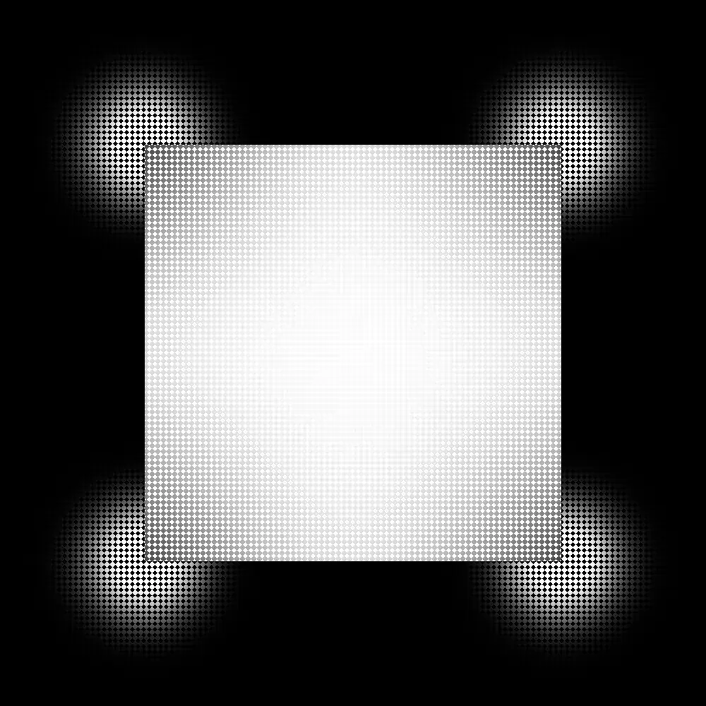
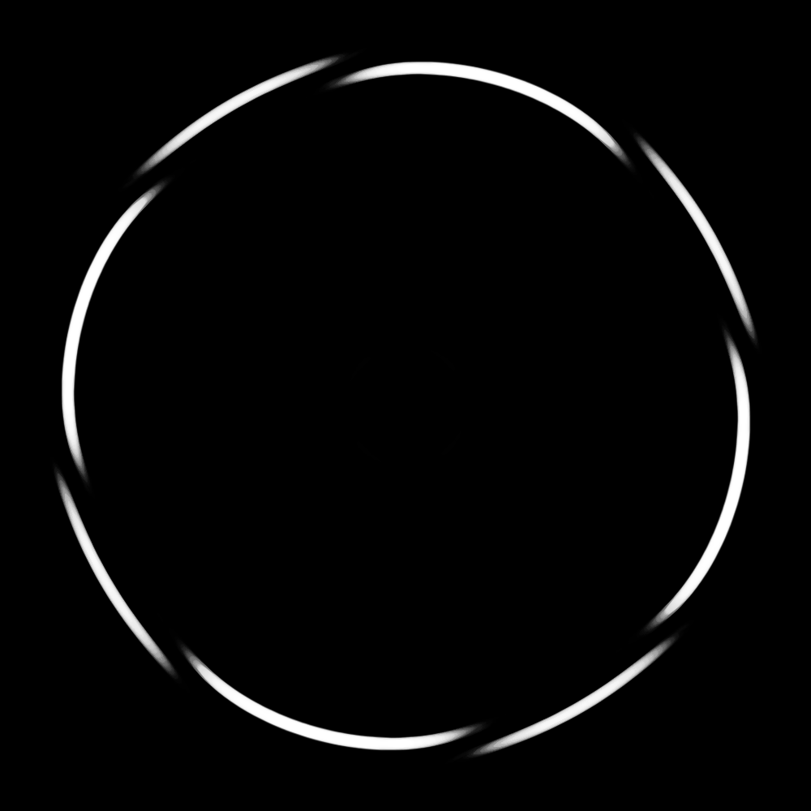
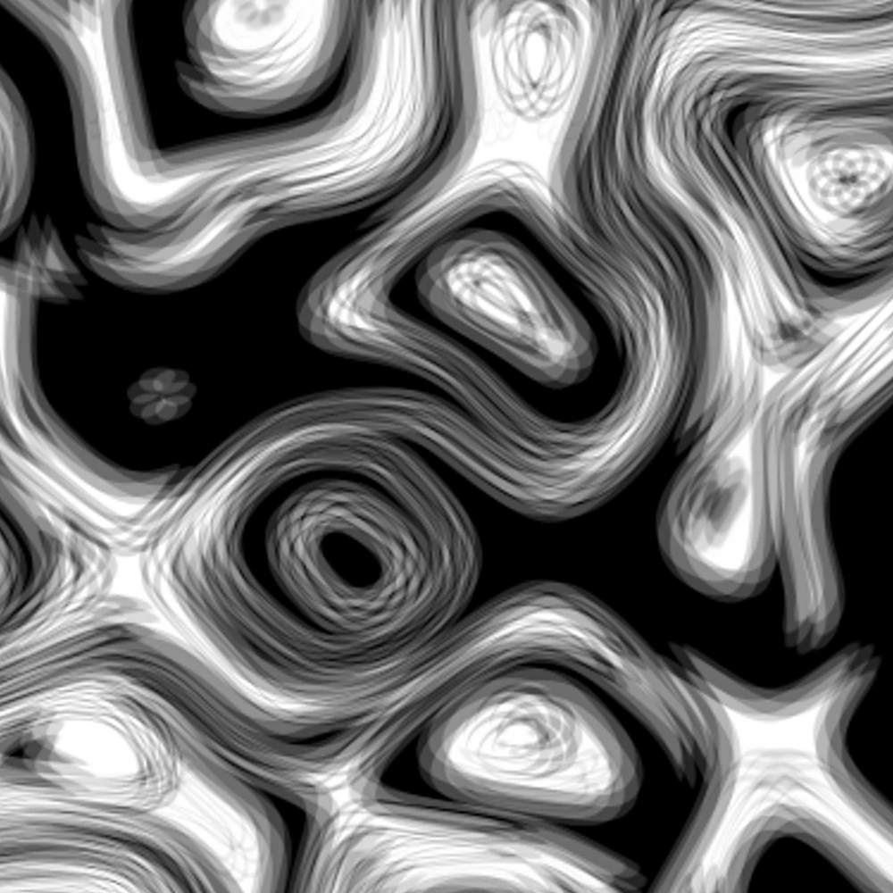

hey im thomas, years old at time of writing, and i'm studying computer science, what you're looking at is 99.9% self made! B)
i usually go by toemah online, feel free to look me up under that handle but know that my activity on those accounts doesn't reflect my person under professional settings, you'll notice i keep it pretty low anyway. :)
below you'd see some of my epic programming work if i was really cool but instead it's just some pictures i made in paintdotnet, ie the best image editing software, in my spare time for fun :')
click on the middle pic to *enhance*


